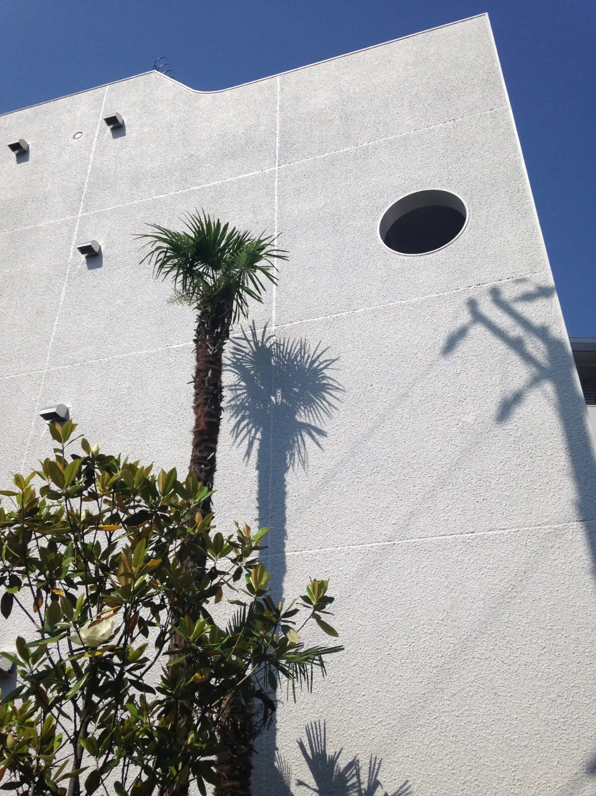
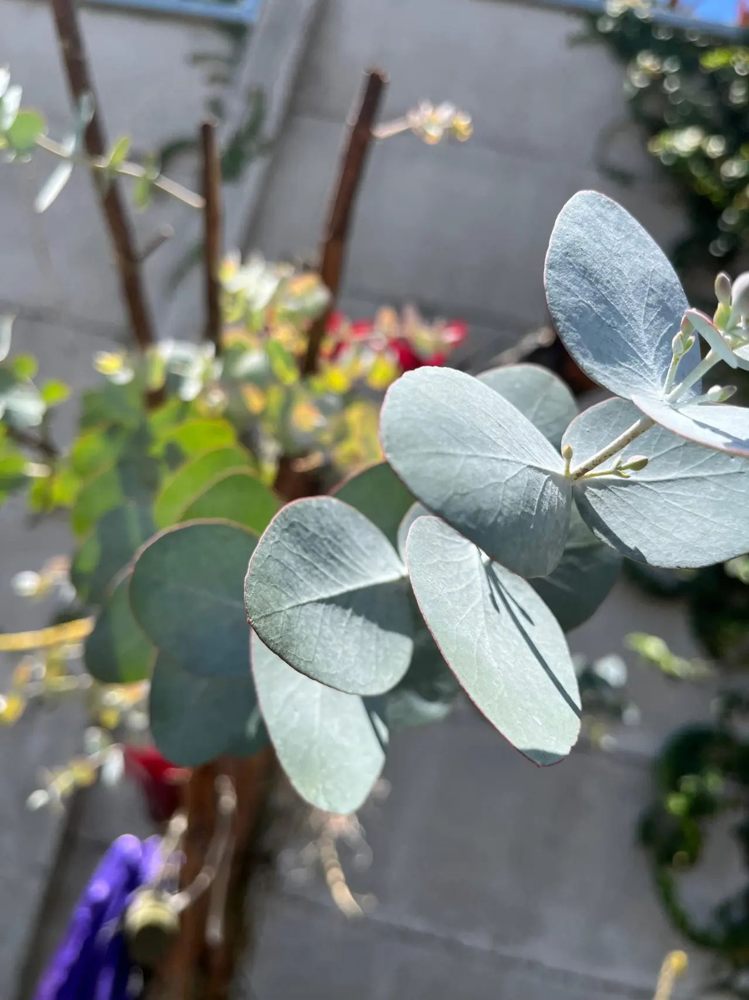
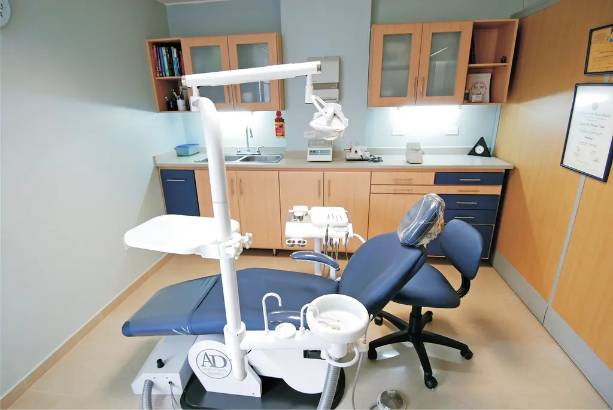

Elija una situación
El arco le muestra qué cambiaría con cada tratamiento.
Sitio de demostración. Sonrisa Norte es una clínica ficticia: los contactos están pendientes, los procesos son ejemplos y las fotografías son ilustrativas: clínica ficticia, fotos ilustrativas.
Clínica dental familiar · San Pedro Sula
Prevención, ortodoncia invisible, implantes y odontopediatría para quien prefiere entender su tratamiento antes de sentarse en el sillón. A su ritmo.

Forma de trabajo de ejemplo · [PENDIENTE: la clínica debe confirmarla]

No necesita saber el nombre técnico
El arco le muestra qué cambiaría con cada tratamiento.
Se retira la placa y el sarro donde el cepillo no llega y se revisan encías y piezas para detectar a tiempo.
Alineadores transparentes hechos a su medida que mueven las piezas poco a poco. Se retiran para comer.
Una raíz artificial ocupa el lugar de la pieza perdida y sobre ella se coloca una corona. Primero se evalúan hueso y encía.
Veinte dientes de leche, una consulta a su medida: prevención y primeras visitas para que crezcan sin miedo al dentista.
Ilustración orientativa: el tratamiento lo decide la valoración en consulta.

Cada uno empieza por una valoración. El arco de cada fila muestra lo que cambia.
Quisiera una limpieza para mí, de preferencia por la mañana.
Tres decisiones, su nombre y una fecha. El mensaje se arma solo y la clínica confirma el horario por WhatsApp.
Completar mi solicitud